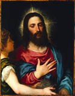

From
the collection

Titian (Tiziano
Vecellio)
The Temptation of Christ
About 1530
Oil on panel
overall H.36-1/8 x W.28-7/16 in.
The William Hood Dunwoody Fund
The
Baroque artist Titian was well known for his compositions and energetic
brushstrokes. The Temptation of Christ shows the keen sense of
color used by the Venetian Baroque artists.
Castiglione was greatly influenced by the works of Titian, and may have
seen woodblock prints of Titian's famous Assumption of 1518, while he
was painting The Immaculate Conception.